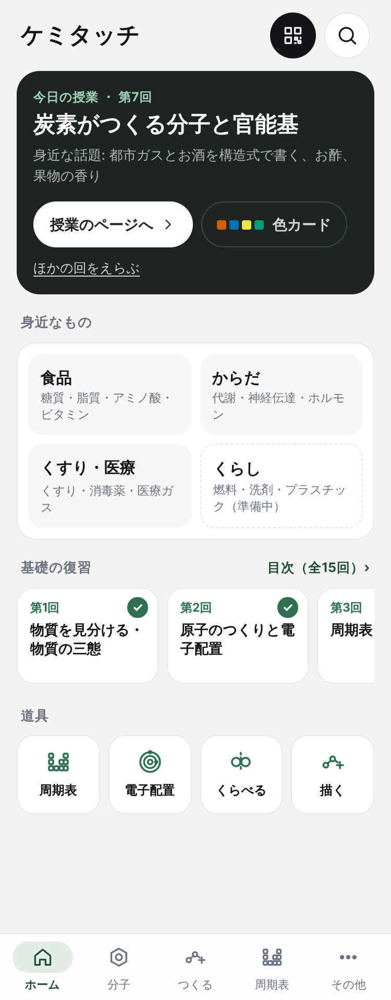
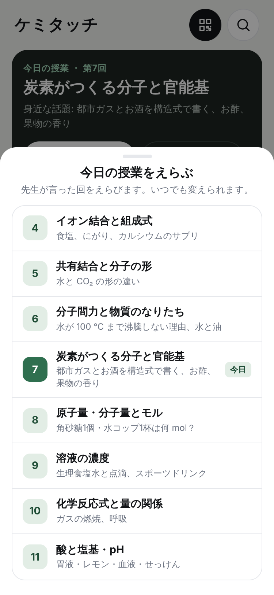
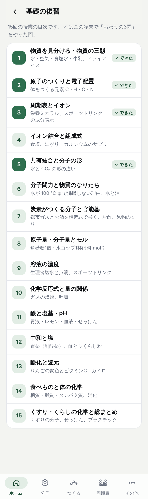
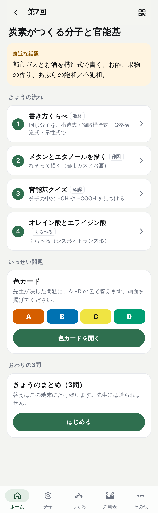
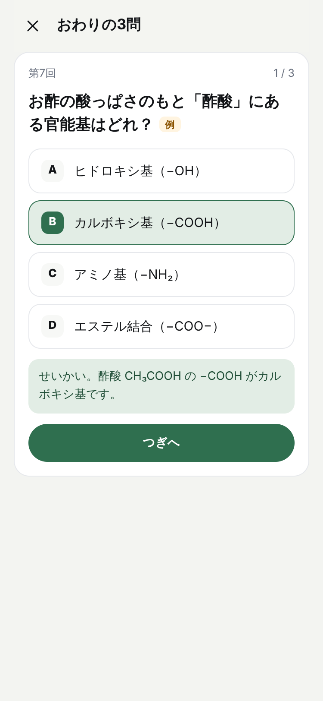
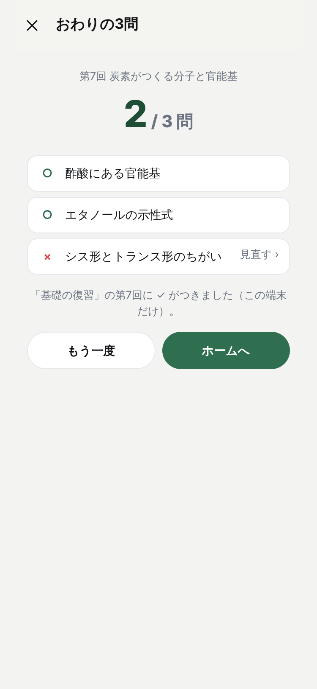
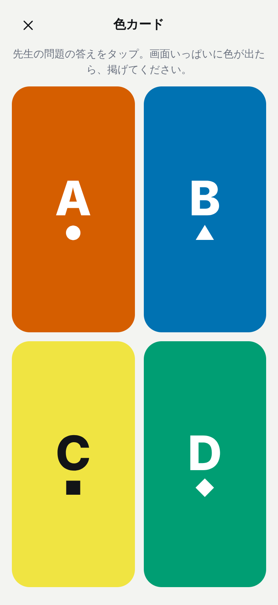
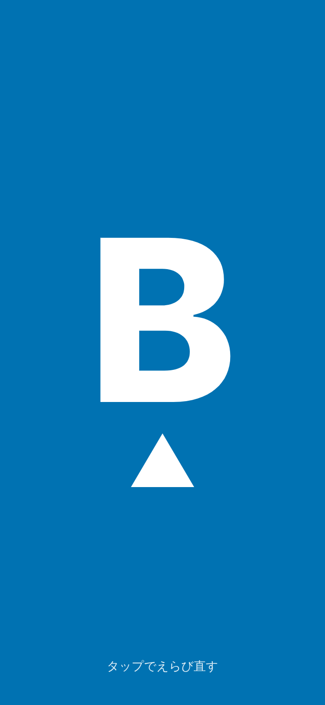
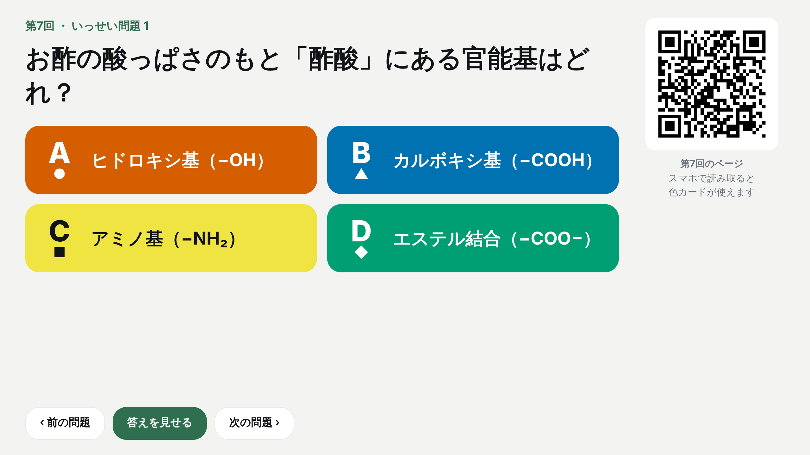
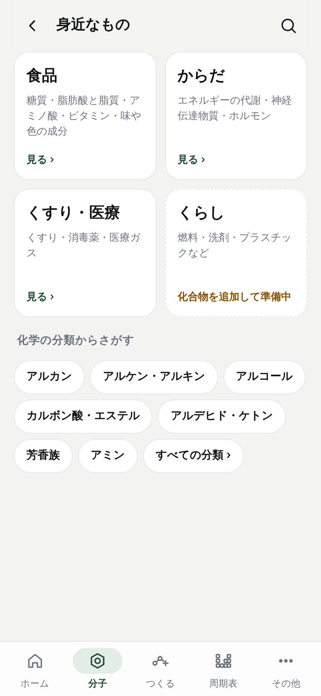

いちばん上に今日の授業。色カードもここから1回で開ける。周期表などは「道具」に小さく残す（下のタブからも行ける）。

今日の授業は、授業プランの日付から選ぶ。日付がない・ちがうときは「ほかの回をえらぶ」で選び直せる（端末が覚える）。

先生が「今日は第7回」と言ったら、ここで選ぶ。日付に縛られない。

15回の目次。授業プランから自動で作る。✓ はおわりの3問をやった回（この端末だけ）。
身近な話題 → きょうの流れ（使う部品の順）→ いっせい問題（色カード）→ おわりの3問。すべて授業プランのファイルから作る。問題の文は例です。

「きょうの流れ」の各行は、今ある画面（書き方くらべ・なぞって描く・クイズ・くらべる）を開く。右上の QR で、このページを学生と共有。

4択。答えるとすぐ正解と一言の説明。

結果は端末の中だけ。先生には送らない（集計なし）。×の問題から関係する画面へ戻れる。
先生が問題を映す → 学生が A〜D をタップ → 画面いっぱいにその色と文字 → 掲げる。サーバーなし・集計なし。色の見分けにくい人のため、文字と形（● ▲ ■ ◆）も出す。


画面を一度タップすると選び直し。

問題と A〜D を色つきで大きく。右上にこの回のページの QR を常に出す（提示モードの常設 QR）。「答えを見せる」で正解の色だけ残す。
「身近なもの」は1つの入口で、開くと4つに分かれる。化学の分類（アルカン・アルコール…）は、その下と一覧の絞り込みに残す。

今の分類から振り分ける案：食品＝糖質・脂肪酸・脂質・アミノ酸・ビタミン・食品成分／からだ＝生体物質／くすり・医療＝医薬品・消毒薬。くらしは化合物の追加（PubChem で照合）が必要。
// 年度ごとに1つ（例: data/plans/2027.json）。複製して直せば来年度用
{
"no": 7,
"date": "2027-06-07", // なくてもよい
"title": "炭素がつくる分子と官能基",
"topic": "都市ガスとお酒を構造式で書く。お酢、果物の香り…",
"parts": [ // 教材カタログの部品を、使う順に
"notation:acetic-acid", // 書き方くらべ
"draw:methane,ethanol", // なぞって描く
"quiz:functional-groups", // 官能基クイズ
"compare:oleic-elaidic", // くらべる
{ "card": "果物の香りはエステル" } // 部品にない話題は文章（と画像）のカード
],
"colorcards": ["q7-1", "q7-2"], // いっせい問題（問題集の ID）
"end3": ["q7-a", "q7-b", "q7-c"] // おわりの3問
}
教材カタログ＝今ある画面や分子を「部品」として ID で呼べる一覧（例: compare:oleic-elaidic）。問題は別の「問題集」ファイルに置き、ID で呼ぶ。中身の文は下書きとして入れ、先生の確認後に公開。「授業をつくる」画面（第4段階）ができるまでは、先生が文で伝えた内容をこちらでファイルに書く。